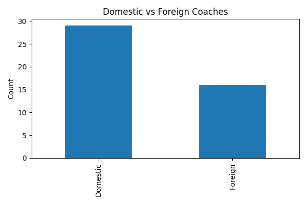
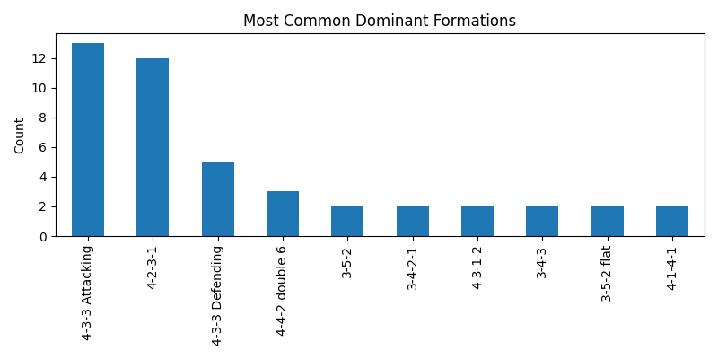
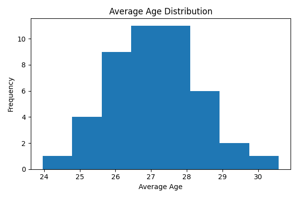
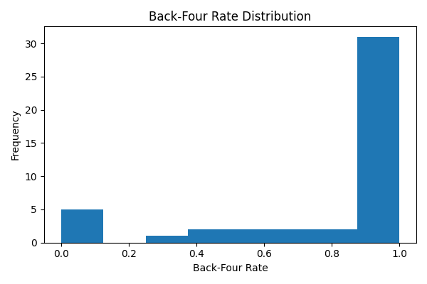
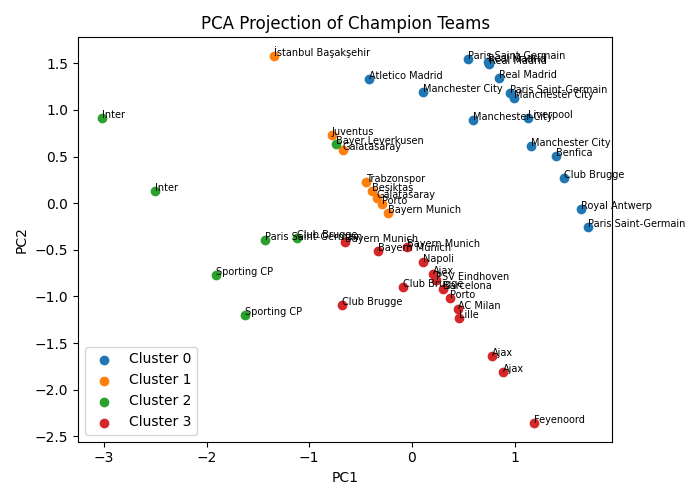
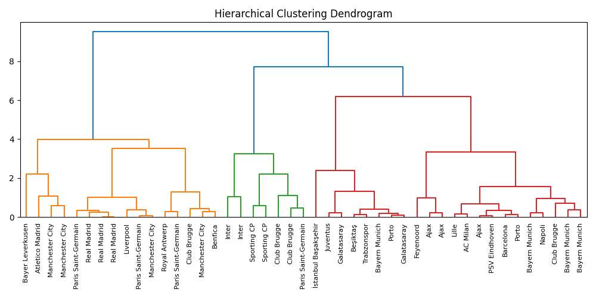

This project investigates whether champions across multiple football leagues share recurring patterns in managerial profile, tactical structure, and squad age composition.
Football analysis often emphasizes points, transfers, or budgets. This project instead asks whether championship-winning teams themselves share a broader structural identity. By comparing champions across leagues and seasons, the analysis aims to reveal whether there is a recurring “champion profile.”
Championship-winning teams tend to work with domestic coaches more often than foreign coaches.
Back-four defensive systems are expected to be more common among champions than alternative structures.
Champions are expected to cluster around a relatively mature and stable age profile.
The unit of analysis is one champion team in one league-season. The final dataset combines match-level, lineup-level, appearance-level, and player-level football data, along with manually enriched coach nationality information.
coach_namecoach_nationalitydomestic_coachdominant_formationback_four_rateavg_agegames.csv, appearances.csv, players.csv, and supporting Transfermarkt-based raw files were used in the data construction stage.
Coach identity, dominant formation, and back-four rate were generated from team match records, while average age was computed as a minutes-weighted measure.
Coach nationality was completed manually through a lookup file, and the domestic/foreign indicator was derived from this field.
The workflow moved from raw data construction to exploratory analysis, hypothesis testing, and finally unsupervised learning for latent champion profiling.
A champion list was prepared covering 45 observations across leagues and seasons.
Competition codes, season filters, fuzzy matching, and manual overrides were used to match teams across different datasets.
Dominant tactical structure, back-four usage, coach information, and age metrics were derived and merged into a final champion profile table.
EDA, formal statistical tests, and unsupervised ML methods were used to evaluate the research questions and discover hidden archetypes.
The main statistical outcomes and their interpretations are summarized below.
| Hypothesis | Result | Statistical Evidence | Interpretation |
|---|---|---|---|
| H1 — Domestic Coach | Weakly Supported |
29 / 45 domestic coaches
Exact binomial test p = 0.0362 |
Domestic coaches are more common among champions, but the difference is not large enough to support a strong causal reading. |
| H2 — Back-Four Preference | Strongly Supported |
Mean back_four_rate = 0.8005
t-test: p = 1.38e-07 Wilcoxon: p = 1.54e-05 |
This is the clearest result in the project: championship-winning teams heavily rely on back-four defensive systems. |
| H2b — Formation Begins With 4 | Strongly Supported |
37 / 45 teams
Exact binomial test p = 7.69e-06 |
Most champions have a dominant tactical identity that starts with a four-man defensive base. |
| H3 — Average Age Profile | Descriptively Supported |
Mean age = 27.10
95% CI = [26.72, 27.48] |
Champions cluster around a relatively narrow age band, suggesting a stable balance between youth and experience. |
| ML Stage | Completed |
K-Means clustering
PCA visualization Hierarchical clustering |
Unsupervised learning was applied to uncover latent champion archetypes rather than to predict outcomes. |




Because the dataset contains only champion teams, supervised prediction was not appropriate. Instead, the machine learning stage focused on unsupervised learning to detect structural groupings among champions.
Clusters were created using domestic_coach, back_four_rate, and avg_age.
A dendrogram was used to reveal broader structural similarity patterns between champion teams.
PCA projected champions into two dimensions so cluster patterns could be visually interpreted more clearly.


Although the project successfully builds a cross-league champion profile, several limitations should be noted.
Artificial intelligence was used in a supportive technical role during the development of this project through ChatGPT, mainly in the following areas:
All research decisions, methodological design, hypothesis formulation, feature selection, result interpretation, and academic ownership remain entirely with the student.
The final project builds a cross-league descriptive and analytical profile of championship-winning teams.
The results indicate that domestic coaches are somewhat more common among champions, though this evidence is best interpreted as weakly supportive rather than conclusive.
In contrast, the tactical findings are much stronger: championship-winning teams overwhelmingly rely on back-four systems, and dominant formations that begin with “4” clearly dominate the sample.
The age results suggest that champions tend to cluster around a relatively stable age profile, while the unsupervised ML stage further shows that champions are not identical but can still be grouped into meaningful structural archetypes.
Overall, the project shows that title-winning football teams can be studied not only through points and trophies, but also through a broader structural lens that includes managerial identity, tactical organization, and squad composition.